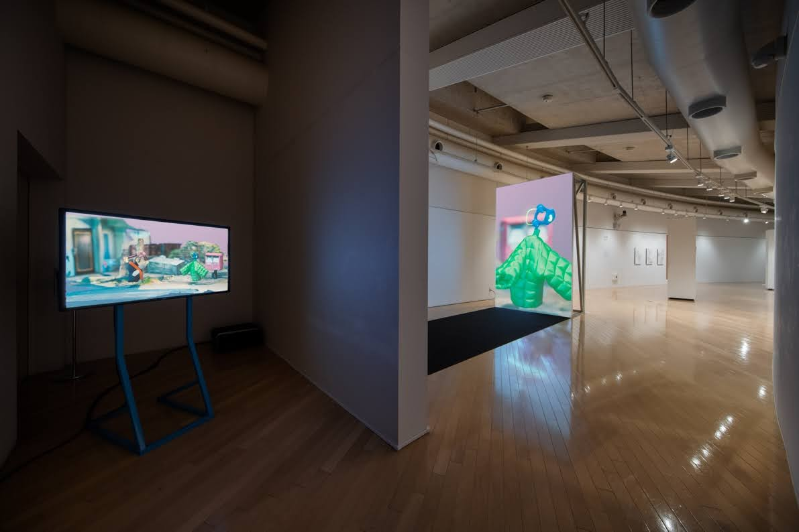

JPハンドメイドムーブメント season1 大体の事柄は布に覆われてしまっている。
ENHand Made Movement season1 Most Matters Are Obscured by Cloth
2022

Photo:ToLoLo studio
Credit
Voice
haduki
Rotia
Hiro Fujimura
Aihara Touko
Nozomu Taiga
Yuzu Satonaka
ochi yuu
Ayaka Yashiro
Motion actor
Right Hand:Mitsuru TOKISATO
Left Hand:Mitsuru TOKISATO
Voice Sound Editor:Junji NAKAUE
Translation: Eriko IKEDA Kay
Modeler:Mitsuru TOKISATO
Casting:Mitsuru Tokisato
Technical director:Mitsuru TOKISATO
script editor:japanese-gpt-1b
script consultant:Mitsuru TOKISATO
director:Mitsuru TOKISATO
Ending Thema:suzueri
Production:Loading elephant
Exhibitions
2022.06.25-08.21 《ON―ものと身体、接点から》
2023.06.24-2024.01.14《ICC アニュアル 2023 ものごとのかたち》